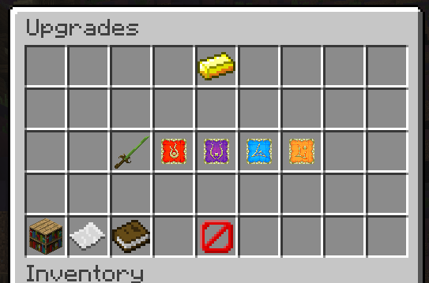

Fighter's Glory is our pilot event gamemode for Warlords 2, based around the Boltaro boss. There are two gamemodes available for this event, being Boltaro's Lair and Boltaro Bonanza.
This event will be available from 28th December (when this update comes out) to Janurary 9th 05:30 EST (30 minutes before server restarts on that Monday).
The below effects apply to both modes:
- Warrior’s Triumph – Ability durations are reduced by 30% on ability activation for non-Warrior specializations. Warrior strikes deal 200% more damage. The gravity is twice as intensive.
- The event map is equipped with a newly added Safe Zone.
- The Safe Zone is a cave clad in obsidian, slightly outside the boundaries of the original Illusion Rift map.
- Each player can enter the Safe Zone 3 times.
- Upon entering the Safe Zone, you will gain the SAFE effect for 15 seconds and mobs will stop targetting you.
- While within the Safe Zone, you can access the upgrade menu but you cannot activate any abilities.
- The SAFE effect is removed when you leave the Safe Zone, or when the Safe Zone timer runs out.
- If you fail to leave the Safe Zone within 15 seconds and still have Safe Zone entries remaining, the game will automatically consume another Safe Zone entry, granting you 15 more seconds in the Safe Zone.
- You can utilize the Safe Zone to configure upgrades, take a breather, or wait till your teammates revive!
- The respawn time is 20 seconds. This can be reduced by the Respawn Time Reduction Guild Upgrade.
- If all players die, the event points earned is reduced by 30%.
- You have entered the lair which Boltaro resides. Kill as many mobs as possible to earn Event Points!
- The Boltaro just keep on coming! Kill as many Boltaro as possible to earn Event Points!
Both event modes will award the usual coins, experience and weapons, along with Event Points for this event. Event Points can be used to redeem items in the Event Shop.
There will be a leaderboard for total Event Points earned individually! Those who are among the highest ranked players will earn bountiful rewards. Reward Information can be found here.
Guilds will also get rewards based on the total amount of Event Points their guild obtains, details to be determined.
- Added an Auto Upgrader for skill upgrades.
- You can add upgrades to your auto upgrade queue by right clicking the upgrade.
- You can view your queued upgrades by hovering on the bookshelf.
- Clear your queued upgrades by clicking the paper.
- Save your auto upgrade preferences by clicking the book! Once you do so, your auto upgrade preferences will be automatically available when you next play a game with this class. 
- Added a Guild Party command (/g party) to invite all online guild members to your party.
- Added a minimum convertible amount when converting Coins to Guild Coins.
- Killed Chessking and Fu_cloud
- Passive Ability: Gain 10% Damage and Health per 100 kills. Capped at 500 kills.
- Requires a Juggernaut Title Token to unlock. This token can be obtained from the Event Shop of Fighter's Glory.
- Replaced Prism Guard Spark Upgrade Tree with Chronos, increasing the duration of Prism Guard instead.
- Chessking now no longer does Melee Damage.
- Instead, Chessking activates his Belch ability every 5 seconds, dealing 2800 - 3600 damage to nearby players.
- Fixed Avenger's Wrath applying the Consecrate damage boost twice.
- Fixed Undying Army showing decimals on the damage message when popped.
- Fixed Vorpal from applying the damage boost when taking damage from Undying Army.
- Fixed Orbs of Life healing upgrades not working.
- Fixed Inspiring Presence Master descriptions being inaccurate on website and in-game.
Event Coding and Bug Fixes: sumSmash
Event Design: Flare, sumSmash
Mob Design: Plikie, Flare
Event Map Reskin: Godcipe
Website Support: Jager
Image Rendering: pekk